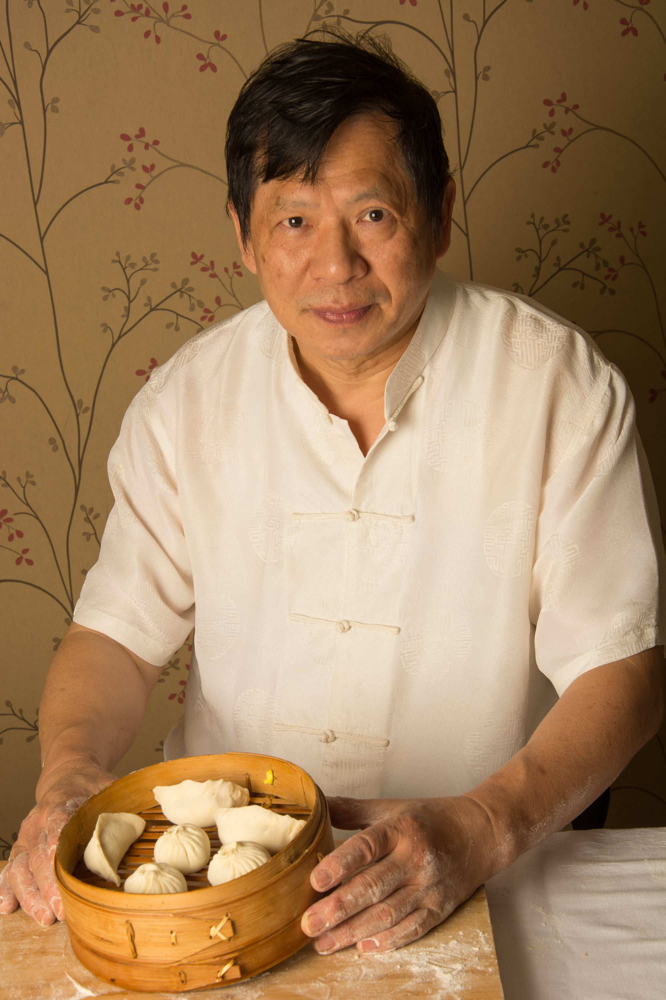

"A rica e variada gastronomia chinesa é celebrada com devoção no You Yi desde 1991 pelas hábeis mãos do chef Rong Zhou Hua, nascido e formado em Shanghai."
"Sua esposa, Li Mei Yun, recebe os clientes com hospitalidade, trocando histórias com a clientela cativa."
"A casa serve ainda como um ponto de encontro da comunidade chinesa que, com saudade, saboreia as delícias da culinária típica das principais regiões do país, como Yangzhou, Cantão, Sichuan e Shandong."
Uma aventura iniciada há mais de 30 anos
A onda imigratória iniciada com a diáspora chinesa do século 19 se propagou por boa parte do século 20. Foi assim que em 1987, o chef de cozinha Rong Zhou Hua e sua esposa Li Mei Yun, influenciados por diversos amigos que já haviam emigrado, decidiram embarcar numa aventura que viria a mudar suas vidas para sempre.
Chegaram ao Brasil sem falar uma palavra de português e estabeleceram-se em Porto Alegre, RS. O início foi muito difícil. Na época não existia internet nem telefones celular, tampouco muitas das facilidades que hoje ajudam a suavizar um pouco da barreira entre culturas tão distintas. Contavam apenas com a ajuda de alguns poucos chineses que já haviam se estabelecido na cidade.
Zhou, agora com o nome ocidentalizado de Cláudio, começou a trabalhar em um restaurante chinês da capital enquanto sua esposa, agora Lígia, ajudava vendendo pequenos folhados chineses. Trabalharam por 3 anos para quitar as dívidas de viagem e ainda conseguiram juntar o necessário para iniciar seu próprio restaurante. Nascia então o You Yi, que significa “amizade” em mandarim.
Os primeiros 10 anos foram de muito trabalho. Haviam muitos restaurantes chineses na cidade, mas a grande maioria trabalhava no sistema de buffet. A proposta gastronômica do You Yi sempre foi a de ser o mais fiel possível à tradição: pratos a la carte com alta qualidade e preparados de acordo com as técnicas originais, como wok e deep fried.
Tão logo a comunidade chinesa descobriu este novo ponto de contato com sua tão querida cozinha, a novidade começou a se espalhar e no final dos anos 90 o restaurante já era ponto de encontro, contando com uma clientela cativa de brasileiros e chineses.
O reconhecimento veio nos anos 2000, com a celebração de diversos prêmios, como o de melhor restaurante chinês pela revista Veja Comer & Beber em 2004, 2005, 2006 e 2007, e também a indicação de melhor chef para Cláudio Zhou, em 2008, pela mesma revista.
Timeline do You Yi
- 1975
Rong Zhou Hua se apresentando em um concurso de culinária em Shanghai
- 1991
Primeira divulgação do restaurante no jornal Zero Hora
- 1995
Ganhando maturidade e conquistando a clientela da cidade com sua proposta original
- 2005
Reconhecimento: premiado como Melhor Restaurante Chinês pela revista Veja Comer & Beber

- 2006
Segundo prêmia de Melhor Restaurante Chinês pela revista Veja
- 2007
Mais uma conquista: terceiro ano seguido eleito Melhor Restaurante Chinês pela revista Veja
- 2008
Honrado em ser indicado para Melhor Chef pela Veja, um dos prêmios mais importantes da gastronomia local
- 
- 2020
Cláudio Zhou e a famosa Meia-Lua: especialidade de Shanghai, sua terra natal

- 2020
Dona Lígia e sua paixão pelos tradicionais chás chineses